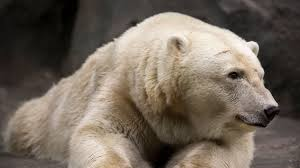
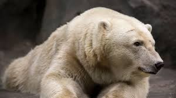

A Bear’s Bill of Rights
A bear has the right to expect that you will:
- be an educated resident of bear country and be willing to accommodate the needs of bears into your lifestyle and daily habits
- have realistic expectations about living in bear country; to realize that is unacceptable to attract bears to your property with improperly stored garbage, recycling, bird feeders, smelly compost, and barbecue grease among other enticing non-natural attractants
- set aside the necessary time to properly dispose of your garbage; clean your barbecue; and pick ripe fruit from your trees
- take responsibility for your actions in a bear’s habitat while hiking and camping
- be aware that you share roads and pathways with bears as well as other wildlife and give wildlife the right-of-way
- provide a healthy, unpolluted environment for bears to live in; and to leave places where bears can forage, raise their families and find dens Read more
 

An interview with a bear: Momma Jeanie
- This column was written for entertainment purposes only. Although bears can’t really communicate at this level with people, the author bases the answers on her experience observing this particular bear over a 15 year period.
- The following interview has been translated from Ursine to English for your reading pleasure. Jeanie, was the resident matriarch of Whistler Mountain in British Columbia, Canada. She has since passed on. This interview took place during the fall, just before heading into the den. Here’s what she had to say.
- Q: So Jeanie….We’ve know each other for many years now and it’s truly been a pleasure. I’d like to thank you for taking time away from foraging to communicate with me. First of all, why don’t you tell our readers a little bit about yourself?
- A: Sure. The pleasure is all mine. As you know, I’m the dominant female on Whistler Mountain; the matriarch so to speak. I’m quite well known in these hills by the bruins and homosapians alike. I’m the one wearing a cinnamon brown coat, with a stunning V-shaped cream-coloured patch on my chest. My weight varies depending on the season of course on whether I’ve got cubs. But, I’m pretty distinctive looking. I think it’s my eyes. I have really distinctive eyes. People must think I’m very pretty because they photograph me all the time.
- Q: I’m dying to know… do you think you’re going into hibernation pregnant?
- Thanks for your time my beautiful friend. I’ll see you on the mountains. Read more
Building a Bear Smart Community
Everything you always wanted to know
Recently, the Grizzly Bear Outreach Project (GBOP) team skyped Get Bear Smart to learn more about creating bear smart communities in Washington. I’m sure many of you have the same questions, so I thought I’d provide a summary of the conversation.
Read more